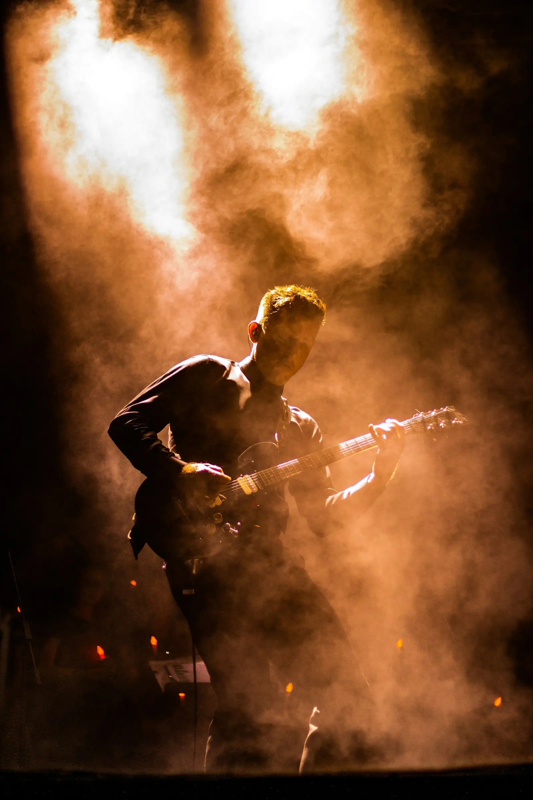
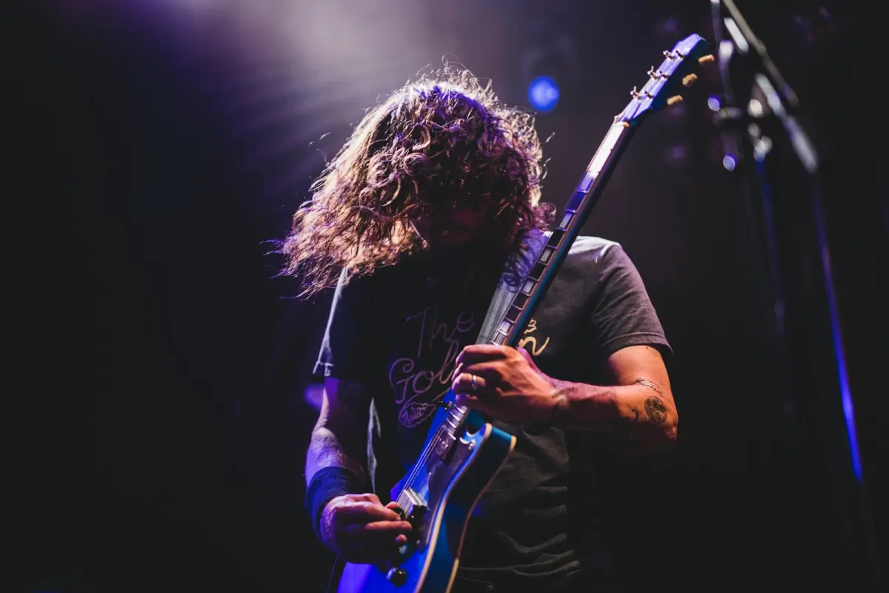

Foto: Daniel Sturgess / Unsplash
Sobre mí

Me crié en Vallecas. Con 14 años cogí la guitarra de mi padre en un garaje del barrio y ya no la solté. Aprendí a base de poner discos una y otra vez y de tocar hasta que se quejaban los vecinos.
En 2022 nació Iron Wolf. Empecé tocando en los garitos de Malasaña, noche tras noche, para quien quisiera escuchar. Lo mío es el rock de siempre: los riffs directos de AC/DC, la épica de Led Zeppelin y la actitud de Guns N' Roses. Canto en inglés, toco con las guitarras al frente y hago estribillos para cantarlos a gritos.
Hoy salgo al escenario con mi banda: guitarra solista, bajo y batería. Y una sola regla: que nadie se quede quieto.
- Desde
- 2022
- De
- Vallecas, Madrid
- Suena a
- AC/DC · Led Zeppelin · Guns N' Roses